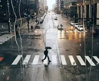

相传幸福是个美丽的玻璃球，跌碎散落在世间的每个角落。有的人捡到多些，有的人捡到少些。却没有人能拥有全部。爱你所爱选你所选，珍惜现在所拥有的一切。人活着就是一种心情，把握今天，设置明天，储存永远。只要用心感受，幸福就会永远存在。
勇敢做自己，永远不会太迟。过去只是经历，现在是尝试，未来才是期待。向前看是梦想和目标；向后看是检验和修正。有多少事，如果当初回头看看，就会做得更好；有多少人，如果能回头一看，可以免去多少错误和遗憾。回头其实身后也写着前方的路。你自己选择的路、跪着也要把它走完。别把人生想的太难。
有些路看起来很近，可是走下去却很远的，缺少耐心的人永远走不到头。人生，一半是现实，一半是梦想。
爱上一个人，不是因为他给了你需要东西，而是因为他给了你从未有过的感觉。
我们都按自己的方式生活着，10岁、20岁、30岁，不同的环境和心境下，领悟都会改变，没有谁好谁坏，这就是成长。
沉默的男人看上去有些懦弱，实则是喜欢安静，享受一个人思考。他们不说，不是不懂，有时是心口难开，有时是不屑，因为在他们看来：爱一定是铭心刻骨的，但凡能说出来的，便是浅薄。
 做最单纯的人，走最幸福的路。我们时常会感觉心累，只是自己想得太多。我们总说生活繁琐，其实是自己不懂得品味。我们总是争强好胜，其实是自己虚荣心太强。其实，人生就那么简单，多点快乐，少点烦恼，累了就睡觉，醒了就微笑，闲了就发微博，做一个最单纯的人，走一段最幸福的路。
很多事情，只要开始迈出第一步，就根本停不下来。
梦的最深处，只有微笑不累。
为什么暗恋那么好。因为暗恋从来不会失恋，你一笑我高兴很多天；你一句话我记得好多年。
一个不能享受孤独的人，其实是很寂寞的。很多人天天参加各种聚会活动沙龙，他无法让自己安静下来，因为他害怕孤独，害怕跟自己相处。因为只要跟自己相处，就需要跟自己的内心对话。所以他需要热闹的环境，在其中寻找自己的存在感，所以他其实很寂寞。一个无法跟自己独处的人，一般不会有什么大智慧。
至于感情，如果不能相濡以沫，那么就选择相忘于江湖；我们要做的是争取和最爱的人相濡以沫，和次爱的人相忘于江湖。
如今的我们，似乎长大了，然后去学着承担；似乎懂事了，因而学着拼搏；似乎现实了，从而学着虚伪；似乎世故了，进而学会寡言。可是又有几个人能够真正的独栋他们自己的内心。
鱼有两种，一种在海里，一种在网里。人与鱼之间，只有网的距离。人有两种：一种是迷惘之众，一种是开悟之佛。众与佛之间，只有心的距离。时间有两种：一种是过去，一种是未来。过去与未来之间，只有当下的距离。结果有两种：一种是失败，一种是成功。失败与成功之间，只有汗水与心智的距离。
 我喜欢淡淡的情意，孤独的时候，一句不经意的问候，丝丝温馨会象春雨般滋润着你的身心，悲伤的时候，一个真切的关心，阵阵温暖会象晨雾一样弥漫在你的整个内心，我还喜欢天空中那淡淡的云，淡淡的风，还有那份淡淡的思念。
我喜欢淡淡的情意，孤独的时候，一句不经意的问候，丝丝温馨会象春雨般滋润着你的身心，悲伤的时候，一个真切的关心，阵阵温暖会象晨雾一样弥漫在你的整个内心，我还喜欢天空中那淡淡的云，淡淡的风，还有那份淡淡的思念。
 有些人遭遇遗憾与失望时会非常沮丧，其实，从另一个角度来看，失望和遗憾也是一种幸福，这证明你的这个梦想和期望还在。就如一个人并不是为了死才生一样，一个期望，一个梦想，最美的时候恰恰是这个过程。因此，懂得享受过程，看淡结果，人生就会增加许多的色彩与幸福，少很多的遗憾与失望。
有些人遭遇遗憾与失望时会非常沮丧，其实，从另一个角度来看，失望和遗憾也是一种幸福，这证明你的这个梦想和期望还在。就如一个人并不是为了死才生一样，一个期望，一个梦想，最美的时候恰恰是这个过程。因此，懂得享受过程，看淡结果，人生就会增加许多的色彩与幸福，少很多的遗憾与失望。
人活得累，是想要的东西太多，自己却不曾真正努力。
 西游：出身不好，想成佛是有难度的；红楼：出身不好，想嫁人是有难度的；水浒：出身不好，想当官是有难度的；三国：出身不好，创业是有难度的!
西游：出身不好，想成佛是有难度的；红楼：出身不好，想嫁人是有难度的；水浒：出身不好，想当官是有难度的；三国：出身不好，创业是有难度的!
 读书多了，容颜自然改变，许多时候，自己可能以为许多看过的书籍都成过眼烟云，不复记忆，其实它们仍是潜在的，在气质里、在谈吐上、在胸襟的无涯，当然也可能显露在生活和文字中。当然这一点我感觉很惭愧，连语文教材都没看过几本。。。
读书多了，容颜自然改变，许多时候，自己可能以为许多看过的书籍都成过眼烟云，不复记忆，其实它们仍是潜在的，在气质里、在谈吐上、在胸襟的无涯，当然也可能显露在生活和文字中。当然这一点我感觉很惭愧，连语文教材都没看过几本。。。
岁月就像一条河，左岸是无法忘却的回忆，右岸是值得把握的青春年华，中间飞快流淌的，是隐隐的伤感。世间有许多美好的东西，但真正属于自己的却并不多。看庭前花开花落，荣辱不惊，望天上云卷云舒，去留无意。在这个纷绕的世界里，能够学会用一颗平常的心去对待周围的一切，也是一种境界！。
Design by chenmingan.